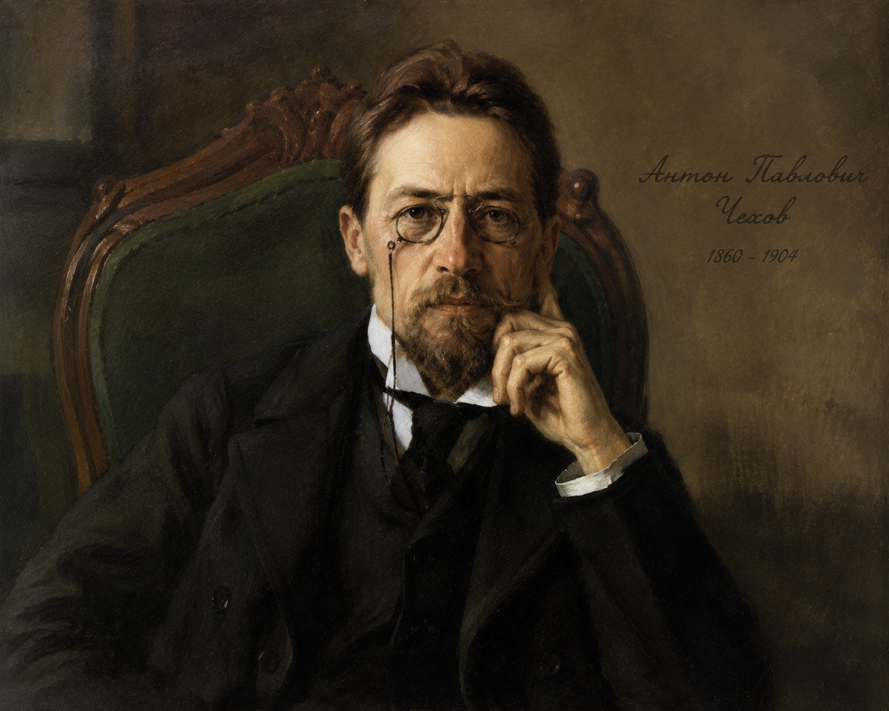

"Đôi khi hồi ức về một kỉ niệm nhỏ bé trong quá quá khứ lại khiến ta phải suy ngẫm nhiều về cuộc sống của mình trong hiện tại và tương lai. Hãy kể lại kỉ niệm ấy với bạn bè."
• Cuộc đời: An-tôn Sê-khốp (1860 – 1904) sinh ra và lớn lên tại thị trấn Ta-gan-rốc (Taganrog), miền nam nước Nga. Ông tốt nghiệp ngành Y tại Đại học Tổng hợp Mát-scơ-va năm 1884.
• Sự nghiệp: Là nhà văn, nhà soạn kịch vĩ đại của Nga. Năm 1898, ông được thừa nhận là một trong những nhà văn lớn nhất của văn học Nga. L. Tolstoy đánh giá Sê-khốp đã "sáng tạo nên cách viết mới cho toàn thế giới".
• Phong cách nghệ thuật: Hàm súc, cô đọng. Truyện ngắn của ông thường là "truyện không có chuyện", mở đầu đưa người đọc nhập thẳng vào khung cảnh, kết thúc gây cảm giác "chưa có chuyện gì xảy ra cả", đọng lại tâm trạng khắc khoải, dư ba sâu sắc.

Hình 1: Chân dung An-tôn Sê-khốpNhân vật "tôi" rủ cô gái Na-đi-a trượt tuyết xuống dốc gắt đầy nguy hiểm. Mỗi lần xe lao dốc kinh hoàng, "tôi" lại thì thào vào gió câu nói: "Na-đi-a, anh yêu em!". Na-đi-a vừa sợ hãi trượt tuyết vừa băn khoăn không biết ai đã nói câu đó (gió hay là "tôi"). Vì khao khát nghe lại câu nói ấy, Na-đi-a bất chấp nỗi sợ hãi để trượt tuyết nhiều lần, thậm chí tự mình trượt một mình. Đến mùa xuân, nhân vật "tôi" sắp đi xa, qua khe hở hàng rào nhìn thấy Na-đi-a buồn bã, "tôi" lại thì thầm câu nói ấy theo làn gió rồi rời đi mãi mãi. Nhiều năm sau, Na-đi-a đã lập gia đình và hạnh phúc, còn "tôi" khi đã đứng tuổi vẫn không hiểu vì sao mình lại bày ra trò đùa đó.
| Phần | Thời gian / Bối cảnh | Nội dung chính |
|---|---|---|
| Phần 1 | Một buổi trưa mùa đông | Lần trượt tuyết đầu tiên và sự xuất hiện của câu đùa "Na-đi-a, anh yêu em!". |
| Phần 2 | Những ngày đông tiếp theo | Các lần trượt tuyết lặp lại; sự tò mò, giằng xé và lòng dũng cảm bất ngờ của Na-đi-a. |
| Phần 3 | Mùa xuân sang (Cuối tháng Ba) | Buổi chiều chia tay trước hàng rào và lời thì thầm cuối cùng theo gió xuân. |
| Phần 4 | Nhiều năm sau (Hiện tại) | Tình trạng cuộc sống hiện tại của hai người và sự trăn trở của nhân vật "tôi". |
Truyện ngắn Một chuyện đùa nho nhỏ xuất bản lần đầu trên tạp chí Dế mèn của Nga năm 1886. Năm 1899, Sê-khốp chỉnh lý, bổ sung một số câu chữ và đặc biệt thay đổi phần kết truyện để đưa vào tuyển tập tác phẩm của mình. Tục ngữ Nga có câu: "Uống rượu từ bình nào chả thế, cốt sao say là được" thể hiện tâm lý tận hưởng cảm xúc yêu thương ngọt ngào không quan trọng nguồn gốc.
Phân tích điểm nhìn nghệ thuật và ngôi kể trong văn bản. Nhận biết sự dịch chuyển điểm nhìn từ người kể chuyện lúc tham gia sự việc (quá khứ) sang điểm nhìn suy ngẫm, chiêm nghiệm của người kể chuyện ở thời điểm hiện tại (bây giờ).
Chú ý các chi tiết nghệ thuật giàu tính biểu tượng: "Chiếc xe trượt tuyết", "Làn gió", "Hàng rào cao có đỉnh nhọn" và "khe hở hàng rào". Đây là những hình ảnh ẩn dụ cho ranh giới, khoảng cách tâm hồn cũng như sự đùa giỡn với tình cảm con người.
1. Lưu ý về ngôi kể: Lời kể xuất phát chủ yếu từ điểm nhìn "lúc đó" hay "bây giờ"?
2. Vì sao Na-đi-a "không muốn tin rằng gió đã nói những lời ấy"?
3. Lưu ý "độ vênh" giữa suy đoán của người kể chuyện với hành động tiếp theo của Na-đi-a.
🖐️ Hoạt động / Nêu vấn đề: Ý nghĩa của hình ảnh "hàng rào cao có đỉnh nhọn" và hành động "ghé nhìn qua khe hở".
Câu 1: Câu chuyện được kể bằng lời người kể chuyện ngôi thứ mấy? Người kể chuyện là ai?
Câu 2: Dựa vào sự thay đổi thời gian, địa điểm, thành phần nhân vật, xác định bố cục tác phẩm?
Câu 3: Căn cứ vào lời tả và kể trong lần trượt tuyết đầu tiên, đoán định tình cảm thực sự của nhân vật "tôi" với Na-đi-a?
Câu 4: Những hành động nào cho thấy "tôi" không còn khả năng đồng cảm với Na-đi-a? Vì sao "tôi" cũng là người mất mát?
Câu 5: Ý nghĩa của câu nói "Na-đi-a, anh yêu em!" đối với Na-đi-a?
Câu 6: Cảnh chia tay mùa xuân gợi suy nghĩ gì? Lời khuyên ứng xử?
Câu 7: Tâm trạng nhân vật "tôi" ở phần kết và cảm hứng chủ đạo của tác phẩm?
Đề bài: Viết đoạn văn (khoảng 150 chữ) phân tích hình ảnh "hàng rào" trong truyện ngắn *Một chuyện đùa nho nhỏ*.
Trả lời 10 câu hỏi để chinh phục đỉnh cao kiến thức tác phẩm!
Bài tập 1 (Phân tích điểm nhìn kép):
Hãy phân tích sự chuyển dịch từ điểm nhìn quá khứ (lúc tham gia trò đùa) sang điểm nhìn hiện tại (khi đã đứng tuổi) của nhân vật "tôi". Sự dịch chuyển này tạo nên giá trị nhận thức gì cho tác phẩm?
Bài tập 2 (So sánh và Đánh giá nhân vật):
So sánh nhân vật Na-đi-a và nhân vật "tôi" về mặt tính cách và thái độ đối với tình yêu. Em rút ra bài học gì về ứng xử trong tình bạn, tình yêu tuổi học trò?